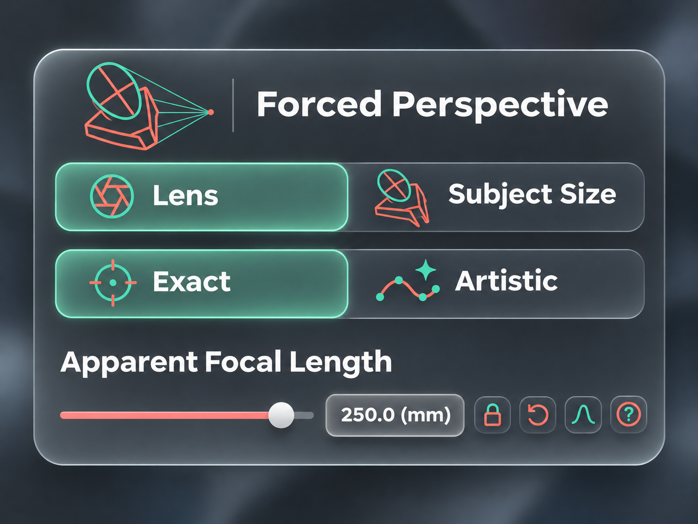
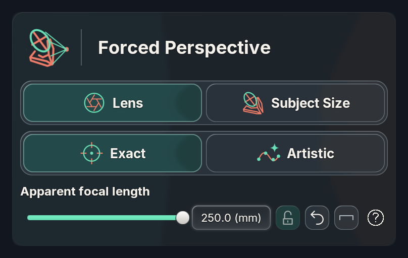
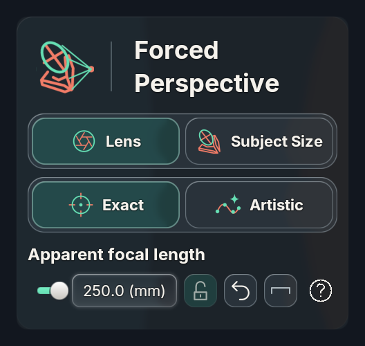
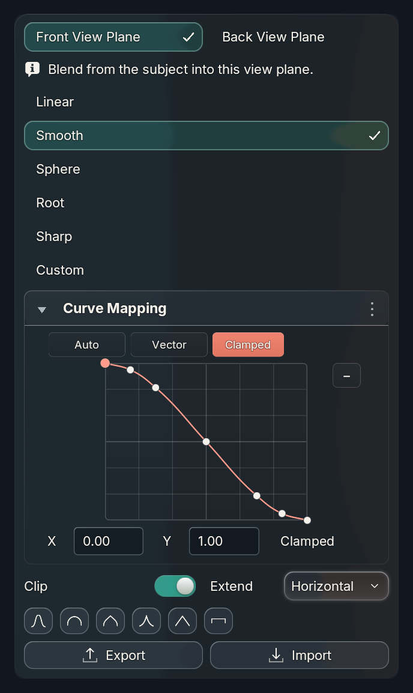
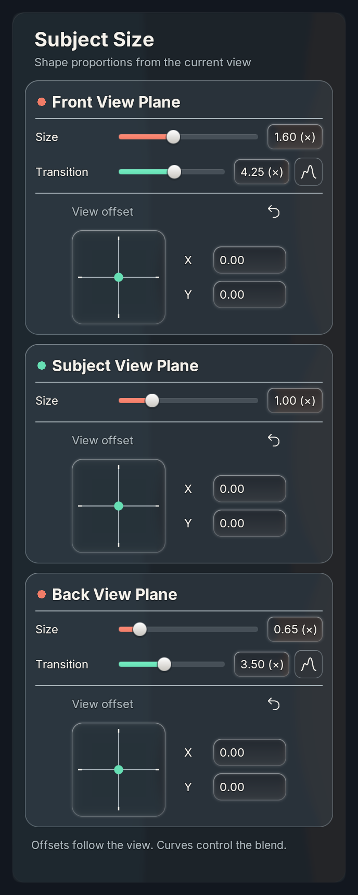
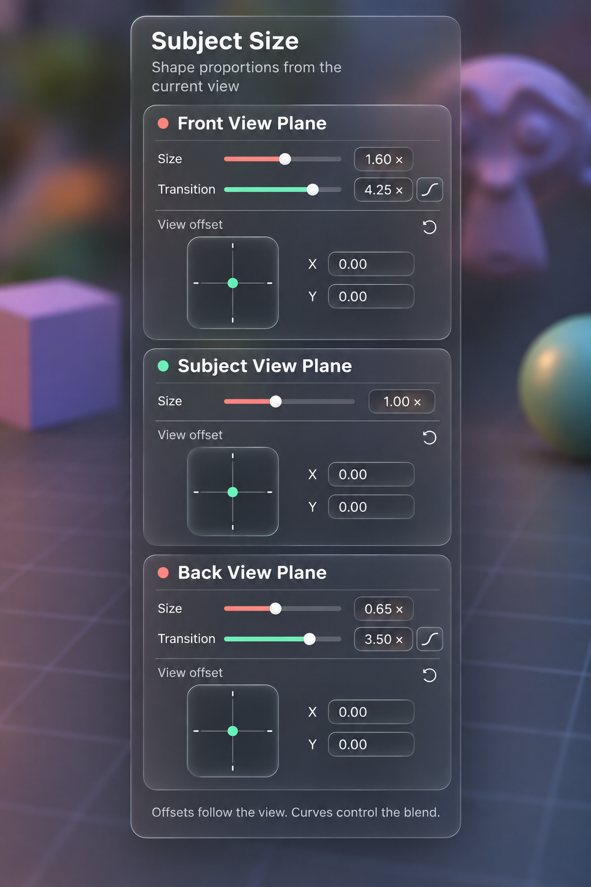
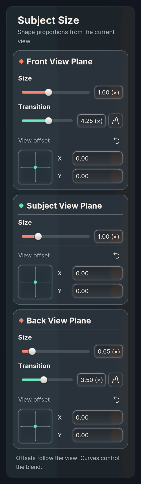
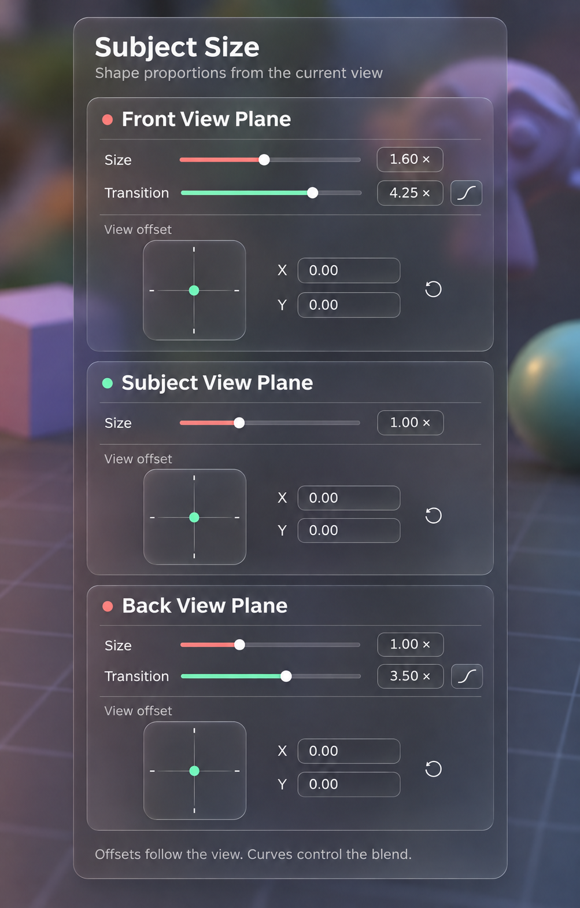
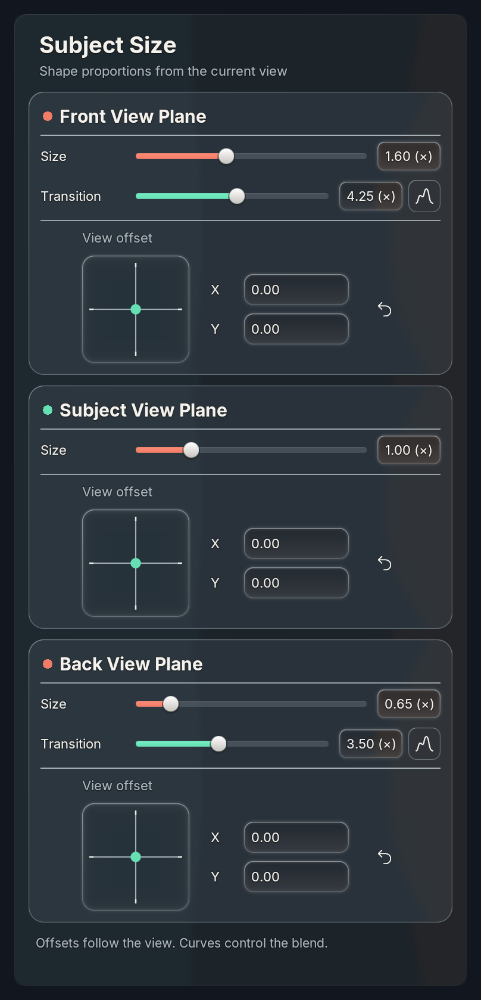

← OverviewView-plane controls: configurable compact layout
Three independent planes, slow cubic velocity joysticks, shared curve popovers, coral/mint accent slots and luminous inset fields. CamKeys now uses reusable BUI width rules for label stacking, padding, gaps, pad sizes and reset placement.
Installed and reloaded in All Might without saving or changing view/size values. 493 unit tests (one skip); UI fixtures pass 4.2–5.2. Metal captures below use the actual production painter and shared glass. Windows GPU replay remains open.
Joystick speed: movement is 4× faster across the entire range. Hold Shift for quarter-speed precision (the original speed). Speed and precision factor are configurable in BUI.
Cross-platform audit and Windows handoff: native bridge/backend safeguards unchanged; expanded Metal renderer and all-family curve/layout fixtures passed. Windows CI/hardware qualification are recorded separately.
Implemented picker tabs
Bold segmented choices and theme-colored transparent artwork are installed. Subject Size uses the approved perspective-head symbol. The original lens shutter shape is retained, uniformly inset inside its green ring; the subsequent redesigned aperture was rejected and reverted. Close reference adaptation at host scale, not a pixel-exact claim. Transparent SVG icon pack.

Actual Metal · 380 logical units
Actual Metal · 240 logical units
Enum ownership and retained popup context pass Blender 4.2.23 and 5.2.2 execution checks. Windows hardware replay remains unverified.
Editable transition curves
Live-update repair: the registered popup had lost its temporary owner context after opening. BUI now retains the accessed custom owner through drag and commit. Both front and back actual operator-popup tests change evaluated geometry before mouse release. Front and Back transitions show a graph for every preset. Editing switches to Custom immediately through the existing coalesced preview path. The final point stays at (1, 0); interior points remain editable. This uses the reusable curve_lock_end=True BUI style option (default False), with an optional start lock too.
Actual Blender 5.2.2 / Metal · editable Smooth transition · 320 logical units
Both directions and all six presets execution-tested on 4.2.23 and 5.2.2. Locked coordinates preserve copy/developer context actions and reject writes. Windows replay remains open. Curve API guide.
Intermediate-width repair
Actual row minimums now choose the layout. Reset moves to the caption before it can wrap; when pad and X/Y no longer fit, every view-plane card switches to compact together. The transition follows nested padding automatically. 562 bidirectional width checks passed on Blender 4.2.23 and 5.2.2.
Actual Metal capture · intermediate 320 logical units · reset moved to header
Compact layout
The generated reference uses an apparently wider canvas. At 240 host units, labels stack to retain legibility; this is a close responsive adaptation, not a pixel-exact claim.
Generated compact reference
Actual Blender 5.2.2 / Metal · 240 logical units · 2×
Wide layout
Generated wide reference
Actual Blender 5.2.2 / Metal · 380 logical units · 2×
Reusable options
bui.style(card, scope="group", padding=16,
responsive=[{"max_width":280,
"style":{"padding":8,"gap":10}}])
bui.style(row, accent_slot=2)
bui.joystick(layout, settings, "offset",
label="View offset", mode="VELOCITY",
speed=.35, velocity_curve=(0,0),
fit_group="planes", compact_size=64)
Rules resolve during retained layout. Resizing keeps exact owners and bindings, restores wider styles, and cancels edits only if their control becomes hidden. No scene polling, additional glass capture, or idle joystick update loop.
API guide · Execution evidence · 1× capture · 1.5× capture
Controlled fixture backdrop differs from the generated artwork; motion GIF and physical Windows qualification are not included. Earlier progressive high-lens deformation request remains separate from this UI work.